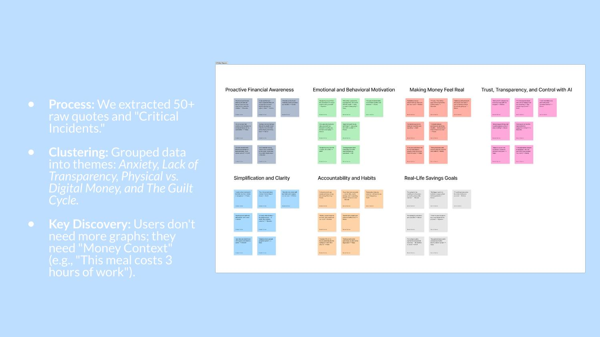
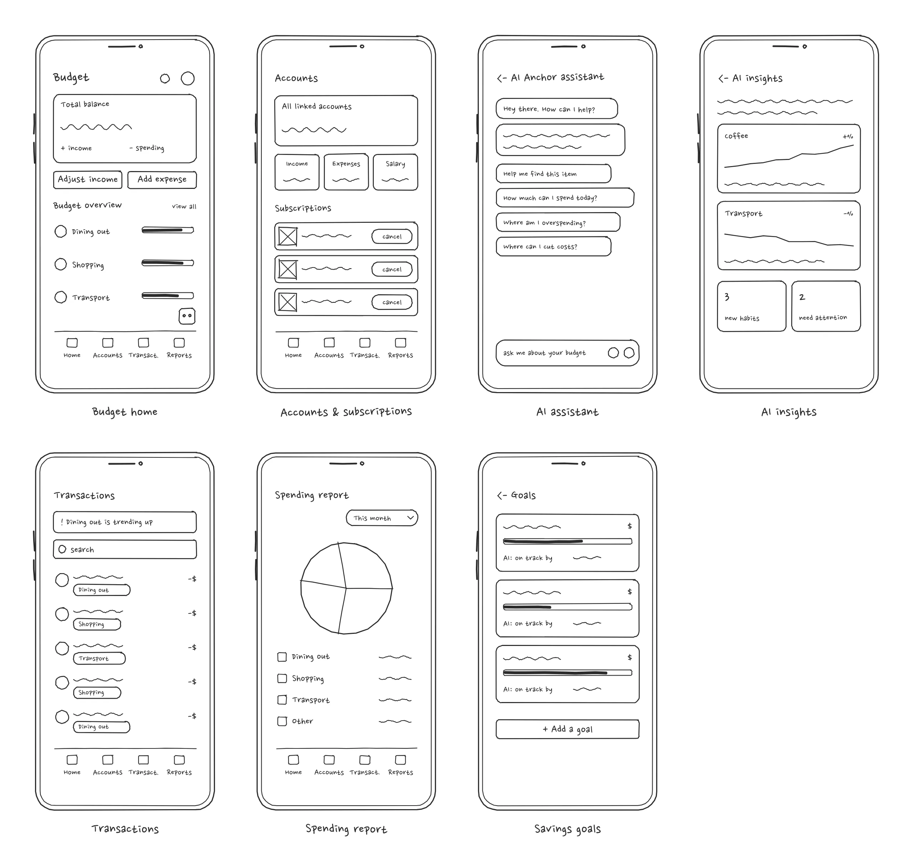
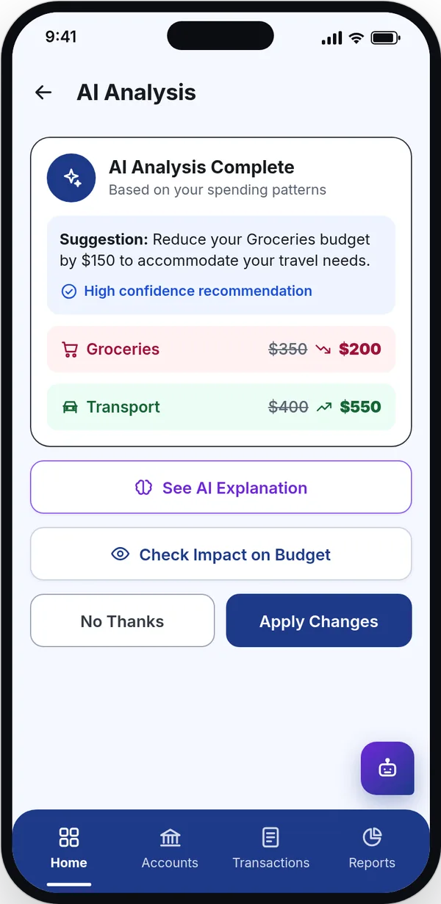
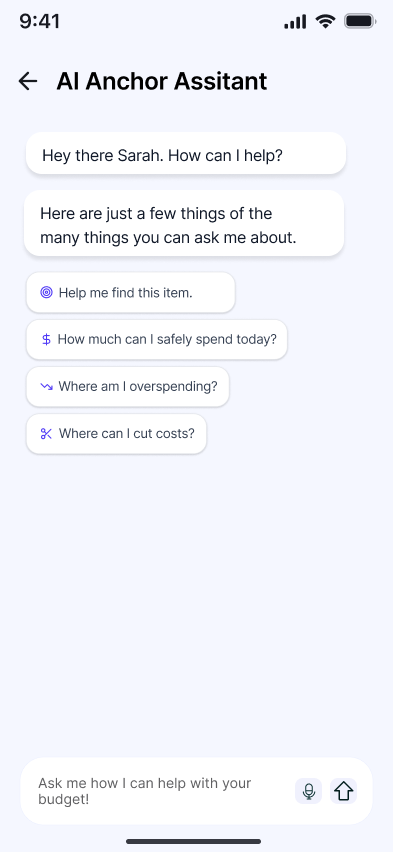

In the moment
Help before a purchase, not in next month's report.
AI product · Fintech · Case study 05
IRB-approved study with 24 participants. 6 of 8 testers fully trusted the AI's advice.

Tapping a card doesn't feel like spending
Cards and digital wallets remove the small pain of paying. Forgotten subscriptions keep charging. And most money apps feel like a report card, so people stop opening them.
Led research and designed the AI coach and budget flows: a coach that speaks up before you spend and explains why.
Help before a purchase, not in next month's report.
Every AI suggestion shows why, and how sure it is.
The AI suggests. The person decides.
I summarized and analyzed 40+ research papers with AI, and we benchmarked 10 budgeting apps. Then we interviewed 8 people aged 20 to 32 and ran 4 focus groups with 16 more.
How this project moved from the mess to a decision. Each stage lists only what was actually done.
I summarized and analyzed 40+ research papers with AI, and we benchmarked 10 budgeting apps. Then we interviewed 8 people aged 20 to 32 and ran 4 focus groups with 16 more.
“I spend more when I'm bored. Surfing online equals unnecessary spending.”Research participant
“If my friends are going out, I'm going out too.”Research participant

From 40+ papers to 10 features in the prototype
When does the help arrive?
A typical money app
Help arrives after the money is gone
Money Anchor
Help arrives before you spend
The trust condition
People would trust AI only if it explained itself and left them the final say. That became a requirement for every AI screen.Two narrative personas we used to walk Money Anchor through real-life money moments.
Source: Team deck, Money Anchor Conceptual Design
“Something simple and easy to see”
Clear progress bars and a budget snapshot on the dashboard
“I use my banking app to see what I spend”
A bank-like view that matches what people already know
“Seeing weekly spend could stop me overspending”
Real-time categorized transactions with trend alerts
“AI telling me I overspent would be very helpful”
A conversational AI with personal, transparent nudges
“I want a pie chart report of my spending”
Monthly visual spending reports with full breakdowns
Source: Team deck, Money Anchor Conceptual Design
22% task success, round one
100% task success, round two

It sat in the bottom menu as one more tab. We made it a floating button on every screen, and AI task success reached 100% in round two.
Dropped
Testers misread them. Labeled buttons, Adjust Income and Add Expense, took misclicks from 29% to 0%.
Research themes the ideas grew from:
Source: Team deck, Money Anchor Conceptual Design
Source: Team deck, Money Anchor Conceptual Design
Interviews and focus groups pointed to simplicity, clarity and AI.
Hand-drawn layouts for flows, navigation and key screens.
Digital screens in Figma: budget, accounts, AI assistant, transactions.
A clickable Figma prototype linking every screen for testing.
Source: Team deck, Money Anchor Conceptual Design
5 core sections, shaped to match the banking apps people already use.
Source: Team deck, Money Anchor Conceptual Design
Source: Team deck, Money Anchor Conceptual Design
Three ways the coach earns trust
Three steps from a question to a decision
Each AI suggestion shows why and how confident it is, with Apply and No thanks side by side, so people stay in control.
✓ 6 of 8 fully trusted the AI

AI card suggesting a smaller grocery budget, with confidence and Apply or No thanks.
You can ask the coach about a purchase in the moment, and it compares products, prices and stores within your budget.
✓ Everyone finished the shopping task

AI Anchor chat with suggested questions.
Alerts stay gentle, because people said apps that scold them make them avoid money altogether.
✓ 7 of 8 would rethink a purchase after an alert
The reasoning behind the screen: visual design, accessibility and the design system it was built on.
Back arrow with a left-aligned title, so people always know where they are and how to get out.
White cards on a soft blue-white background keep each AI message distinct and easy to scan.
People don't know what to ask an AI about their money. Tappable chips with icons show what it can do.
The microphone button gives another way in for people who find typing hard.
Message text is about 17:1 against its background and chip text about 10:1, well past WCAG 2.1 AA.
The Figma style guide uses Inter and Helvetica. The iPhone layout follows Apple's guidelines, and components like the top app bar and suggestion chips come from Material Design.
People trust AI that explains itself and lets them say no
Behavior told the real story: testers rated navigation 4.4 out of 5 while still missing buttons.
Everyone finished the shopping task
6 of 8 fully trusted the AI
7 of 8 would rethink a purchase after an alert
| Measure | Before | After |
|---|---|---|
| Task success exploring the app | 22% | 100% |
| Misclicks on that task | 29% | 0% |
| Fully trusted the AI's advice | not measured | 6 of 8 |
Still open: adjusting a budget caused 54.7% misclicks in round two. We added Adjust to each budget's menu but didn't test it again.
Source: Team deck, Money Anchor Conceptual Design
Round one vs round two, 8 testers each
Watch, don't just ask. What people do in a test matters more than how they rate it.
Ideas, not built.
A ten-second spoken summary of the week, for people who avoid opening money apps.
Fix a wrong category with one tap, so suggestions get more personal over time.
Questions or feedback on this case study? manche.siddhi@gmail.com
Next project
University of Michigan-Dearborn · Curriculum research2 new UX courses from 2 semesters of research